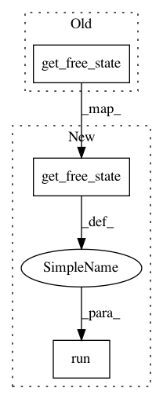

704b11de102aa54bdaa46ac9a98cac64d37c7d84,GPflow/model.py,GPModel,predict_y,#GPModel#,207
Before Change
pred_y_mean, pred_y_var = self.likelihood.predict_mean_and_var(pred_f_mean, pred_f_var)
self._tf_predict_y = lambda Xnew_data, x : self._session.run([pred_y_mean, pred_y_var],
feed_dict={self._free_vars:x, tf_Xnew:Xnew_data })
return self._tf_predict_y(Xnew, self.get_free_state())
def predict_density(self, Xnew, Ynew):
After Change
with self.tf_mode():
pred_f_mean, pred_f_var = self.build_predict(tf_Xnew)
pred_y_mean, pred_y_var = self.likelihood.predict_mean_and_var(pred_f_mean, pred_f_var)
return self._session.run([pred_y_mean, pred_y_var],
feed_dict={self._free_vars:self.get_free_state(), tf_Xnew:Xnew })
def predict_density(self, Xnew, Ynew):
Compute the (log) density of the data Ynew at the points Xnew
In pattern: SUPERPATTERN
Frequency: 3
Non-data size: 3
Instances
Project Name: GPflow/GPflow
Commit Name: 704b11de102aa54bdaa46ac9a98cac64d37c7d84
Time: 2016-01-19
Author: james.hensman@gmail.com
File Name: GPflow/model.py
Class Name: GPModel
Method Name: predict_y
Project Name: GPflow/GPflow
Commit Name: 704b11de102aa54bdaa46ac9a98cac64d37c7d84
Time: 2016-01-19
Author: james.hensman@gmail.com
File Name: GPflow/model.py
Class Name: GPModel
Method Name: predict_f
Project Name: GPflow/GPflow
Commit Name: 704b11de102aa54bdaa46ac9a98cac64d37c7d84
Time: 2016-01-19
Author: james.hensman@gmail.com
File Name: GPflow/model.py
Class Name: GPModel
Method Name: predict_density